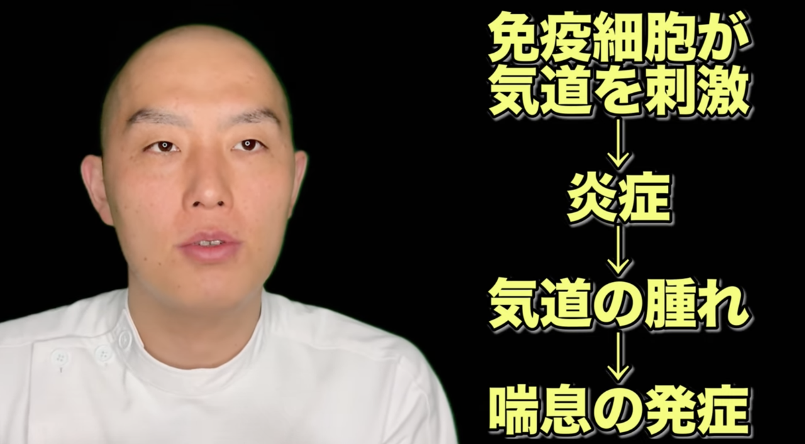
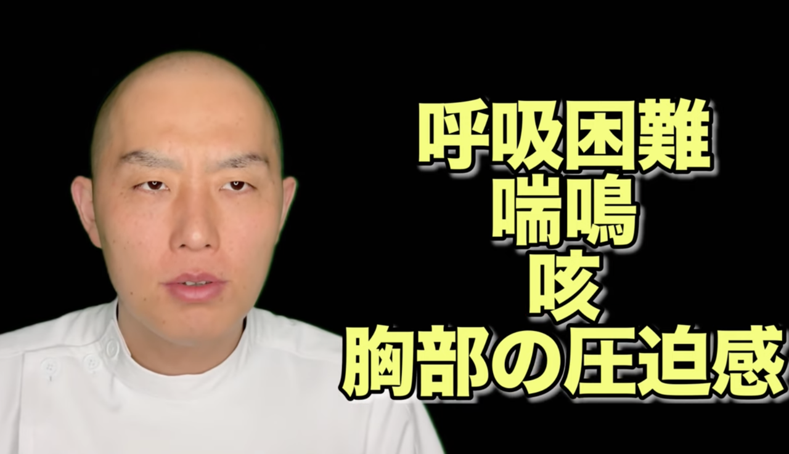
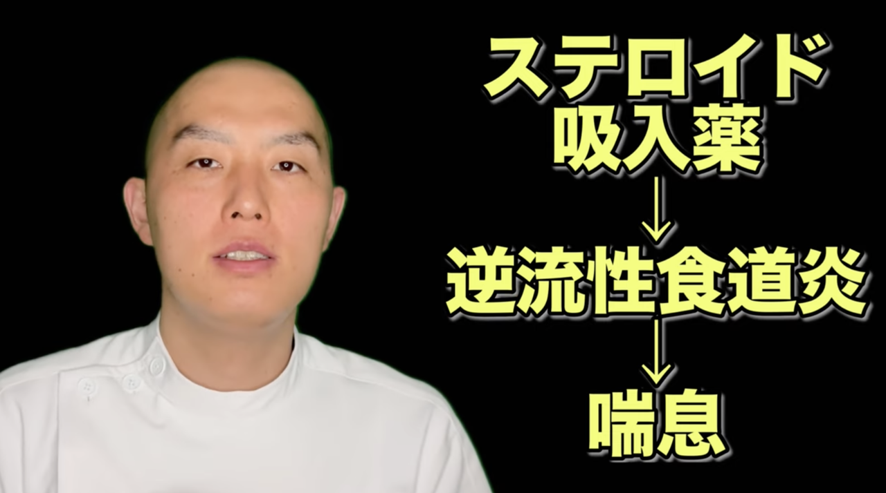
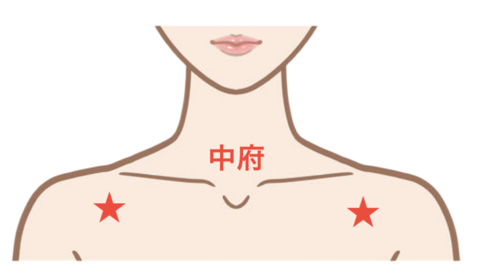

薬の効かない咳喘息の鍼灸
吸入薬で止まらない長引く空咳に対し、自律神経・気管支神経の興奮と逆流性食道炎の視点から整える施術解説。
院長YouTube解説・関連動画
咳喘息の発症の根本の原因は気道の炎症

咳喘息を発症するきっかけは、黄砂や硫酸エアロゾルなどの中国からの大気汚染物質、タバコの受動喫煙、防虫剤の薬物によるもの、スギやハウスダストなどのアレルゲン、冷たい空気や運動、ストレスなど様々な刺激です。
遺伝的な要素や環境的な要素が複雑に絡み合って発症しますが、咳喘息の発症の根本の原因は気道の炎症です。
体内で過剰な免疫反応が起こり、炎症細胞が活性化し気道を攻撃することによって起こります。薬の効かない咳喘息は自分の免疫細胞によって自分の体を攻撃する過程で狭窄を引き起こして発症する自己免疫疾患の１つなのです。
・不適切な判断
咳が喘息以外の上気道咳嗽症候群、胃食道逆流症、慢性閉塞性肺疾患、心不全などの病気によって起こっている可能性があります。これらの状態は、喘息と似たような咳の症状を引き起こすことがあるためです。
・改善計画の不適切さ
使用している薬剤が症状に適していない、または処方された薬の種類、用量、投与方法が適切でない可能性があります。吸入器の使用技術が不適切であることも薬剤が十分に効果を発揮しない一因となります。
・改善方法への非遵守
処方された薬を正しく、定期的に使用していない場合、効果が得られない可能性があります。日常の忙しさや薬に対する誤解が原因で、改善の計画に従わないことがあります。
・環境やライフスタイル
タバコの煙、動物のフケ、ダニ、花粉、職場の刺激物など、環境要因が咳を悪化させている場合があります。これらのトリガーから適切に避難する措置を行なっていない場合は症状はなかなか改善しません。
・合併症
時に胃食道逆流症や副鼻腔炎といった合併症を抱えていることがあり、これらが咳を悪化させることがあります。
・生物学的変数
年齢や性別、遺伝的要素など、個々の生物学的変数によっても薬の効果は影響を受けます。
・薬剤耐性
長期にわたる同一薬剤の使用によって、その薬剤に対する効果が低下する場合があります。
咳喘息の判断方法

咳喘息の簡易判断法があります。カウンセリングによって咳喘息か判断できます。
- •喘息を伴わない咳が８週間以上続く
- •8週間以内に風邪にかかってない
- •気道が過敏になっている
- •気管支拡張薬がよく効く
- •喘鳴、呼吸困難を伴う喘息の既往歴がない
- •咳を引き起こす原因がわかっている
- •胸部レントゲンで異常が見つからない
・頻繁な喘鳴
呼吸時に特有のヒューヒューという音が聞こえることが多いです。これは、気道が狭くなり、空気の通り道が制限されるために起こります。
・持続する呼吸困難
日常的に呼吸が困難で特に活動時に顕著になることがあります。深呼吸ができない、息を吸い込むのが難しい、息苦しさがある、などの症状が挙げられます。
・頻繁な咳
特に夜間や早朝に悪化することがあり、この咳はしばしば長引きます。咳によって睡眠が妨げられることもあります。
・慢性的な胸の圧迫感
胸が締め付けられる感じや重さを感じることがあり、呼吸困難につながることも多いです。
咳喘息の改善には原因である気道の炎症を抑えることが最も重要

西洋医学的に考えると、咳喘息の改善には原因である気道の炎症を抑えることが最も重要です。
そのためには、ステロイド薬を使います。喘息の症状を抑え、呼吸機能を改善し生活の質を上げていくということが現代の改善方法の基本です。
喘息に対するアプローチで1番重要なのは早期介入です。喘息の症状は発症初期から始めることが最も効果的であるとされており、早期の介入を行うことで進行を遅らせ、重症化を防ぐことができます。
- •細胞の炎症活動を抑える
- •サイトカインの産生を減らす
- •気道の壁の変性を予防する
喘息症状に悩んでいる人は基本的に毎日吸入をしています。このステロイドによって胃酸が出やすくなったり胃と食道をつなぐ噴門という筋肉が緩んだりします。そのため、逆流性食道炎を発症することがあるのです。
逆流性食道炎を発症すると、食道の壁や気管支の壁を傷つけてしまい、喘息が悪化するのです。
ステロイド吸入薬による二次障害の喘息があるのです。この二次障害で起こる喘息は、当院にいらっしゃる喘息の方の中でも多いです。
ステロイドが効かない人などは逆流性食道炎を引き起こして起こる二次障害であったというケースが多いため、当院では吸入も良いですが逆流性食道炎を改善するという考え方で改善を行います。
🎥 他のYouTube切り抜き・解説を読む（あと1件）▼
薬の効かない咳喘息で1番多いケース
薬の効かない咳喘息で1番多いケースは、自律神経失調症によって気管支の圧迫が起きているケースや気管支神経の過剰興奮があるケースです。
気管内で炎症が起きているわけではなく、自律神経が原因で気管が閉まったり、気管支神経という神経が単独で興奮して吸った空気に過剰に反応したりして、咳がひどくなったり喘息を引き起こしたりするのです。
鍼灸で改善する場合は、逆流性食道炎や自律神経の状態や気管支神経の状態を把握することが大事になります。
わかりやすい判断材料は、背中の第１胸椎から第３胸椎に小さいニキビがたくさんできることです。この症状は、人は自律神経からくる喘息症状の人に多いです。
改善するとニキビがだんだん減っていき、完全になくなると喘息も落ちつきます。体を整えることによって喘息症状がなくなるのです。
ニキビや体内の内臓の調子などにも着目することが大事です。
・判断の再評価
最初に、判断の正確性を確認します。咳喘息以外の原因が咳の原因でないか検討し、必要に応じて追加で調べることが大事です。
・吸入技術の確認と教育
不適切な吸入技術は薬の効果を低下させるため、吸入器の使用方法を再度確認し、必要に応じて正しい技術を教育します。
・薬の最適化
高用量の吸入ステロイド：標準用量での効果が不十分な場合、用量を増やすことが検討されます。
長期作用型β2刺激薬（LABA）の追加：吸入ステロイド単独で効果が不十分な場合、LABAを追加します。
ロイコトリエン受容体拮抗薬：アレルギー性の喘息に関連する咳に効果的なことがあります。
経口ステロイド：短期間、重症の喘息の症状を抑制するために使用されることがありますが、長期使用には副作用のリスクがあります。
生物学的製剤：重症の喘息に対して特定の炎症経路を標的とする新しい薬が登場しています。特定のタイプの重症喘息に適用される可能性があります。
・トリガーの管理と回避
喘息のトリガーを特定し、これらをできるだけ避けるように努めます。
・合併症の改善
GERDや副鼻腔炎などの喘息の症状を悪化させる可能性のある状態を改善します。
・リハビリテーションと運動
呼吸リハビリテーションや運動を通じて、呼吸筋の強化と全身のコンディショニングを図ります。
・心理的サポート
慢性的な咳や喘息の管理によるストレスや不安を軽減するための心理的サポートやカウンセリングを検討します。
〈長期管理薬〉
・吸入ステロイド（ICS）
用途: 喘息の長期管理に最も一般的に使用される薬。気道の炎症を減少させ、症状をコントロールします。
例: フルチカゾン（フロベント）、ブデソニド（プルミコート）、ベクロメタゾン（クレナイル）など。
・長期作用型β2刺激薬（LABA）
用途: 吸入ステロイドと組み合わせて使用され、気道を開くことにより呼吸を楽にします。単独での使用は推奨されていません。
例: サルメテロール（セレベント）、フォルモテロール（フォルミスト）、インダカテロール（オンブレズ）など。
・ロイコトリエン修飾薬
用途: 気道の炎症と収縮を減少させます。特にアレルギー性喘息に有効です。
例: モンテルカスト（シングレア）、ザフィルルカスト（アコラート）など。
・吸入長期作用型抗コリン薬
用途: 気道の筋肉をリラックスさせ、気道を広げることで呼吸を楽にします。COPDにも使用されますが、喘息の改善にも有効な場合があります。
例: チオトロピウム（スピリーバ）、ウメクリジニウム（インクルーズ）など。
・経口ステロイド
用途: 重症の喘息の短期間の管理や、他の方法が効かない場合に使用されます。長期使用は副作用のリスクがあるため、避けられるべきです。
例: プレドニゾン、プレドニゾロンなど。
・生物学的製剤
用途: 重症の喘息を対象とした、特定の炎症経路を標的とする薬。標準的な改善に反応しない場合に使用されます。
例: オマリズマブ（ザレルト）、メポリズマブ（ヌーカラ）、ベンラリズマブ（ファセンラ）、デュピルマブ（デュピクセント）など。
〈急性発作の薬〉
・短期作用型β2刺激薬（SABA）
用途: 喘息の急性発作の際の第一選択薬。速やかに気道を開き、即時の症状緩和を提供します。
例: サルブタモール（ベントリン）、テルブタリン（ブリカニル）など。
・抗コリン薬
用途: SABAと組み合わせて使用されることがあり、気道の拡張を助けます。
例: イプラトロピウム（アトロベント）など。
・システミックステロイド
用途: 重度の喘息発作や中等度の発作が他の方法に反応しない場合に使用されます。炎症を迅速に抑えることができます。
例: プレドニゾン、プレドニゾロンの経口投与。より重症の場合は静脈内投与を行うこともあります。
当院では、咳喘息の改善は東洋医学の西洋医学の両面からアプローチを行います。
体の興奮を司る神経とリラックスを司る神経のバランスを正常に戻すために自律神経に対して施術を行ったり、逆流性食道炎の改善から施術を行ったりするのです。
人によっては怖いため吸入を止めることが怖いため、吸入を続ける人もいます。その場合は、吸入を続けても構いません。ステロイドを使ってコントロールしている人もたくさんいて、悪い方法ではありません。
しかし、ステロイドを使っても改善しない場合や悪くなる場合は実は多いということを知っておきましょう。喘息が怖いためにステロイドを続けて悪くなっている人で当院に来院する人は非常に多いです。気道の炎症以外にも起こる可能性があるということをぜひ知っておいてほしいです。
その場合は体を整えることによって喘息症状がなくなることもあるため、ニキビや体内の内臓の調子などにも着目して改善を行なっていきます。
当院の咳喘息の回復率は９０%です。薬の効かない咳喘息は、約５回の施術で回復することが多いです。
ステロイド吸入は逆流性食道炎になりやすくなります。吸い続けると胃酸のせいで喘息が起きます。
そんな時は大椎を押しましょう。ここのツボは気管支内の神経を落ち着かせてくれます。早くステロイド吸入を止めるためには是非ここにお灸をしてほしいです。
ツボの位置と押し方
尺沢は、肘を曲げた時にできる内側のシワの上にあるツボです。探すときは、肘の皺をなぞって親指側を押したときに痛みを感じる場所を探しましょう。押すと、あまりの痛みで若干親指まで響くことがあります。
押すときは、力加減は強めで押しましょう。お灸もオススメです。持続的な刺激を与えた方がより効果が期待できるため、鍼のシールやピップエレキバンなどを貼ると良いです。左右両方に貼りましょう。

中府は、鎖骨の外側の下のくぼみから、親指１本分下に下がったところにあります。
押すときは、ツボの反対側の人差し指と中指と薬指の３本を横にそろえて、ゆっくりと押します。気持ちが良いと思う程度の強さで、息を吐いた時にゆっくりとツボを押すことをお勧めします。
孔最は、手のひらを上に向けた状態で、肘を曲げて出来る線の外端から指5本分指先の方向に進んだ部分にあります。
押すときは親指で痛い場所を揉みましょう。お灸を行うことも効果的です。
呼吸器が弱い体質であったり日頃からこの孔最に圧痛やこりがあったりする場合は、お灸や指圧などでセルフケアを行うことで体調が整うことが期待できます。
人気ページ
薬が効かない背景にある「2つの隠れ要因」
銀座そうぜん鍼灸院の臨床解説では、難治性咳喘息の来院者に特徴的な2つの要因を挙げています。第1に、自律神経の乱れにより気管支神経が過敏になり、冷気や会話などのわずかな刺激で咳反射が止まらなくなる状態（第1〜3胸椎付近の背部に細かいニキビが出やすいのが臨床サイン）。第2に、長期の吸入ステロイド使用で胃酸逆流（逆流性食道炎）を併発し、食道・気道壁が刺激され続ける悪循環です。
吸入を急に止める不安がある場合は、主治医の吸入治療を継続したまま、自律神経・気管支神経・胃腸機能を並行して整えるアプローチを行います。
咳喘息・慢性咳嗽に用いられる代表的な7つのツボ

📌 詳細データ・ツボ一覧表を開く▼
| ツボ名（経穴） | 位置の目安 | 主な狙い・役割 | セルフケアの注意点 |
|---|---|---|---|
| 尺沢（しゃくたく） | 肘内側の横ジワ上、上腕二頭筋腱のすぐ親指側 | 肺経の合水穴。鎮咳・気道過敏の緩和に最重視 | 強めの指圧・お灸・置き鍼が有効（内出血・かぶれに注意） |
| 中府（ちゅうふ） | 鎖骨外端下のくぼみから親指1本分下 | 肺の募穴。胸郭の緊張を緩め呼吸を深くする | 3指を揃え息を吐きながら優しく圧迫 |
| 孔最（こうさい） | 肘シワ外端（尺沢）と手首を結ぶ線上、肘から指5本分手首側 | 肺経の郄穴。頑固な咳や喉の炎症・発汗調整 | 圧痛が強いため初回は弱めから慎重に。お灸も好適 |
| 大椎（だいつい） | 首を前に倒して最も出っ張る骨（第7頸椎）のすぐ下 | 気管支神経の鎮静、自律神経調整（吸入中のケアに推奨） | 温熱パッチや蒸しタオルでも代用可（低温やけど注意） |
| 肺兪（はいゆ） | 第3胸椎棘突起下から左右へ指2本分外側 | 慢性咳嗽RCTで最多使用（25/30試験）。背部T1〜T3緊張緩和 | 強いゴリ押しは避け、軽い圧迫や温熱にとどめる |
| 膻中（だんちゅう） | 左右の乳頭を結ぶ線の中央、胸骨上 | 胸の圧迫感・息苦しさ・自律神経性の咳反射緩和 | 骨直上のため強圧は避け、指腹で優しくさする／温める |
| 定喘（ていぜん） | 大椎の左右外側へ指約半本分（0.5寸） | 喘息・咳嗽発作の鎮静（慢性咳嗽RCT頻用穴） | 強い指圧でめまいが出ないよう温熱ケアが安全 |
査読論文が示す「咳喘息・逆流性咳嗽×鍼灸」の科学的エビデンス
📚 査読論文データ・出典表を開く▼
| 年・研究デザイン | 対象・規模 | 主な結果と臨床的意義 | 限界・出典 |
|---|---|---|---|
| 2021年 メタ解析 | 咳喘息（CVA）11 RCTs（計929名） | 総有効率RR=1.18（p<0.00001）、薬物中止後の再発率RR=0.19（p=0.002）。咳嗽・肺機能・炎症指標も改善。 | 組入れRCTの質が低く出版バイアス懸念。eCAM (PMID: 33868443) |
| 2025年 メタ解析 | 慢性咳嗽全般 30 RCTs（計2,835名） | 通常治療への鍼灸上乗せで咳嗽重症度・QOL（LCQ）・総有効率が有意改善、有害事象の群間差なし。 | GRADE中等度・客観的咳回数評価なし。Integr Med Res (PMID: 39944112) |
| 2026年 メタ解析 | GERD関連慢性咳嗽 5 RCTs（計390名） | 西洋薬単独比で日中・夜間咳嗽スコアおよびLCQ（MD 2.29, p<0.00001）が有意改善、重篤な有害事象なし。 | 試験数少・盲検化限界。当院のGERD視点と一致。Front Med (PMID: 41859159) |
| 2017年 RCT | 小児咳喘息 206名（3か月治療＋9か月追跡） | モンテルカスト単独比で総有効率93.1% vs 87.6%（p<0.05）、追跡時再発回数も有意減少（p<0.05）。 | 小児対象・埋線療法（通常鍼と異なる）。Zhongguo Zhen Jiu (PMID: 29231431) |
| 2015年 クロスオーバー試験 | 軽〜中等症喘息成人 74名 | 実鍼後に喀痰好酸球（p=0.035）・PEF（p=0.01）・咳嗽（p=0.040）・夜間覚醒（p=0.009）が改善。 | シャム群でも症状改善し群間差限定的。Clinics (PMID: 26598077) |
| 2000年 国内症例報告 | 薬物無効の慢性咳嗽（n=1） | 週1回の置鍼・灸頭鍼・皮内鍼で激しい咳嗽と喀出し難い痰が消失し体力回復を確認。 | 単一症例報告（対照群なし）。J-STAGE |
呼吸器内科の受診を最優先すべきレッドフラッグ
⚠ 専門医の精密検査を最優先すべきサイン
血痰・喀血、安静時や夜間の強い呼吸困難・チアノーゼ、45歳以上の喫煙者における新規の咳や声枯れ（嗄声）の持続、発熱・原因不明の体重減少・下肢浮腫、飲食時のむせ・繰り返す肺炎、胸部レントゲン異常がある場合は、鍼灸より先に呼吸器内科で精密検査を受けてください。
参考文献・出典
- 銀座そうぜん鍼灸院「薬が効かない咳喘息」
- Xiong et al., Evid Based Complement Alternat Med (2021) — PubMed PMID: 33868443
- Lee et al., Integr Med Res (2025) — PubMed PMID: 39944112
- Choi et al., Front Med (Lausanne) (2026) — PubMed PMID: 41859159
- Wang et al., Zhongguo Zhen Jiu (2017) — PubMed PMID: 29231431
- Pai et al., Clinics (Sao Paulo) (2015) — PubMed PMID: 26598077
- 徳地順子・丹沢章八『全日本鍼灸学会雑誌』50(3):463–469 (2000) — J-STAGE
よくある質問（FAQ）
Q. 病院で処方された吸入薬は続けても大丈夫ですか？▼
Q. なぜステロイド吸入を続けても咳が止まらないことがあるのですか？▼
Q. 背中の状態と咳喘息に関係はありますか？▼
あわせて読まれる関連疾患（特に対応することが多い症状）
感染後に長引く倦怠感・ブレインフォグ・嗅覚障害・自律神経症状に対し、全身の自己回復力を引き出す施術解説。
脳の過剰興奮による聴覚過敏・頭鳴り・めまい・片頭痛に対し、筋肉・神経・内臓の乱れから脳を鎮める鍼灸解説。
頭の中で「キーン」「ザー」と音が鳴り続ける状態を、脳の過覚醒（自律神経）と首肩の深層筋から整える施術解説。
肘の内側での尺骨神経圧迫による小指・薬指のしびれに対し、前腕の深層筋を緩め神経再生を促す施術解説。
30歳以上の女性の約4人に1人にみられる子宮筋腫に対し、骨盤内の血流と自律神経バランスを整える施術解説。
首・鎖骨・胸まわりでの神経圧迫による腕や手のしびれを、斜角筋・小胸筋などの深層筋鍼灸で解放する解説。
おひとりで悩まず、まずはご相談ください
銀座本院・川口・大宮・横浜・博多・田無の各院でご予約を承っております。